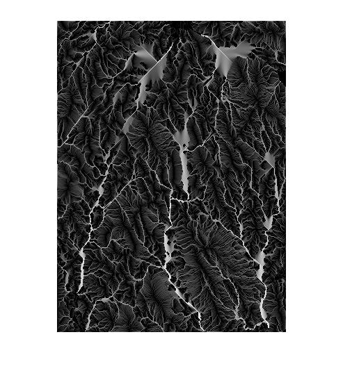

fillSinks
Fill interior sinks in DEM
Contents
Description
Ef = fillSinks(E) fills interior sinks in a DEM.
Example
s = load('milford_ma_dem');
E = s.Zc;
Ef = fillSinks(E);
R = demFlow(Ef);
T = flowMatrix(Ef, R);
A = upslopeArea(Ef, T);
imshow(log(A), [])
 See also
imfill, upslopeArea.